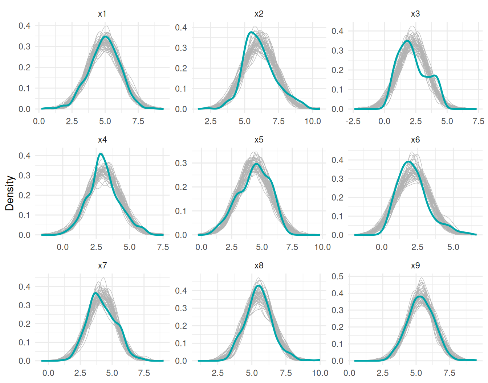
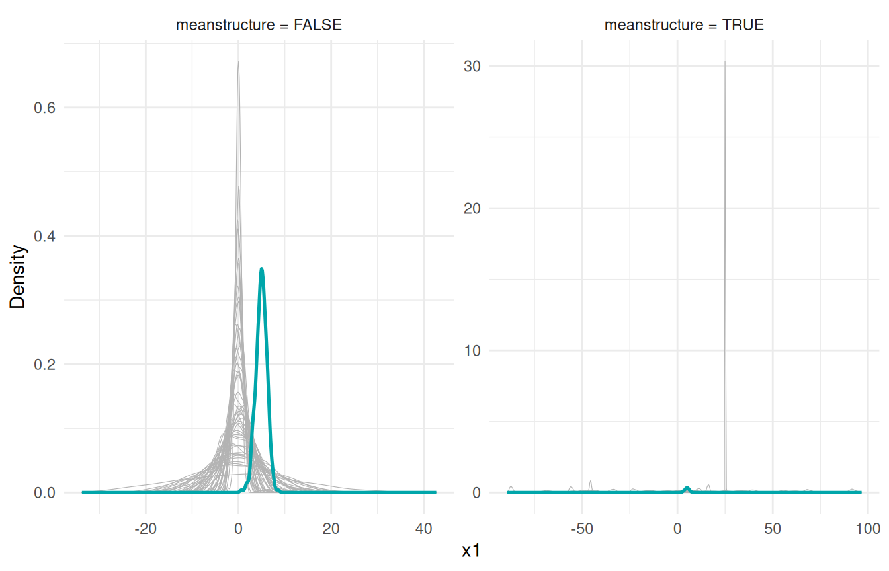
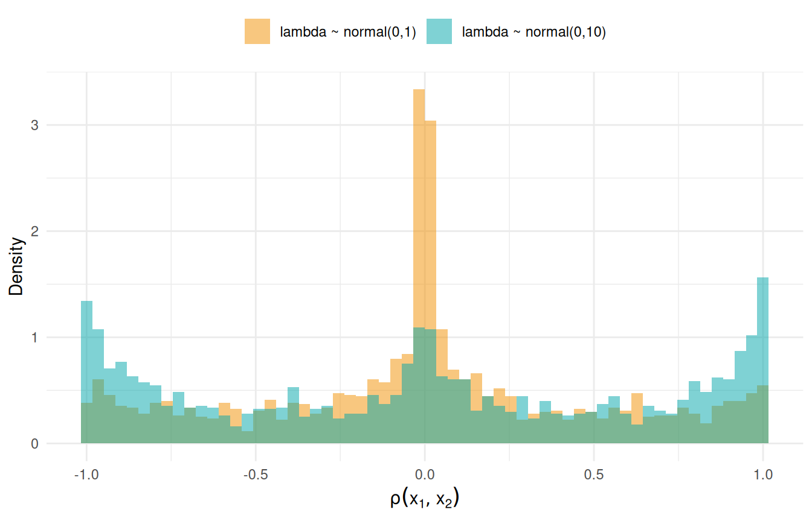

dat <- lavaan::HolzingerSwineford1939
mod <- "
visual =~ x1 + x2 + x3
textual =~ x4 + x5 + x6
speed =~ x7 + x8 + x9
"
fit <- acfa(mod, dat, verbose = FALSE)
yrep <- simulate(fit, nsim = 50)A predictive check asks a simple question: does data generated by the model look like data I have (or expect)? With parameters drawn from the posterior this is a posterior predictive check (PPC)—a goodness-of-fit tool. With parameters drawn from the prior it is a prior predictive check—a way to see what your priors actually imply before the data have any say.
Which function?
A predictive check compares the observed dataset against replicate datasets, so it calls for simulate(): each replicate holds one parameter draw fixed across its rows, which is what makes the observed data exchangeable with the replicates. Its sibling sampling() refreshes at every draw—the right tool for distributions of quantities (parameters, model-implied moments) rather than data, and we use it that way in the last section. Both accept prior = TRUE; the sampling article compares the two functions in detail and documents the generative chain.
Posterior predictive checks
We fit the classic three-factor Holzinger–Swineford model and draw 50 replicate datasets from the posterior predictive distribution.
Each element of yrep is a data frame with the same dimensions as the original data. We overlay the density of every replicate (grey) on the observed density (teal), for all nine indicators:
vars <- paste0("x", 1:9)
rep_df <- do.call(rbind, lapply(seq_along(yrep), function(s) {
d <- yrep[[s]][vars]
data.frame(sim = s, var = rep(vars, each = nrow(d)),
value = unlist(d, use.names = FALSE))
}))
obs_df <- data.frame(var = rep(vars, each = nrow(dat)),
value = unlist(dat[vars], use.names = FALSE))
ggplot() +
geom_density(data = rep_df, aes(value, group = sim),
colour = "grey70", linewidth = 0.2) +
geom_density(data = obs_df, aes(value),
colour = "#00A6AA", linewidth = 0.9) +
facet_wrap(~var, scales = "free") +
labs(x = NULL, y = "Density") +
theme_minimal(base_size = 11)
Most indicators sit comfortably inside the replicate envelope. The clearest misfit is x3: the observed density has a second bump on the right that no Gaussian replicate reproduces—a feature of the data the model cannot generate. This is what a PPC is for: it points at where the model fails, not just whether it fails. For a single-number summary of the same idea (the posterior predictive -value), see the Bayesian fit indices article.
Prior predictive checks
Setting prior = TRUE draws each parameter from its prior instead of the posterior—the data play no role, so this is a check of the priors. We compare replicates from the covariance-only fit above with a refit that models the means:
prior_df <- rbind(
data.frame(ms = "meanstructure = FALSE",
sim = rep(seq_along(yp_f), each = nrow(dat)),
x1 = unlist(lapply(yp_f, `[[`, "x1"), use.names = FALSE)),
data.frame(ms = "meanstructure = TRUE",
sim = rep(seq_along(yp_t), each = nrow(dat)),
x1 = unlist(lapply(yp_t, `[[`, "x1"), use.names = FALSE))
)
obs1_df <- data.frame(ms = unique(prior_df$ms), x1 = rep(dat$x1, each = 2))
ggplot() +
geom_density(data = prior_df, aes(x1, group = sim),
colour = "grey70", linewidth = 0.2) +
geom_density(data = obs1_df, aes(x1),
colour = "#00A6AA", linewidth = 0.9) +
facet_wrap(~ms, scales = "free") +
labs(x = "x1", y = "Density") +
theme_minimal(base_size = 11)
Two things stand out, and neither is a bug:
Without a mean structure, replicates are centred at zero while the data sit around 5. The model has no intercept parameters; INLAvaan treats the saturated means as having an improper flat prior that is integrated out analytically (see the mean structures article). An improper prior cannot be sampled from, so the prior predictive simply has no location—replicates are placed at zero by convention. Compare shape, scale, and correlation only, not location. (Posterior replicates do not have this issue: there the means have a proper posterior , and
simulate()andsampling()draw from it to put replicates on the data scale.)With a mean structure, replicates wander over roughly . The default intercept prior is
normal(0,32)—deliberately vague so it barely influences the posterior, but generatively very spread out. If a realistic prior predictive matters to you, tighten it, e.g.acfa(mod, dat, meanstructure = TRUE, dp = priors_for(nu = "normal(0,10)")), or per parameter withprior()modifiers in the model string.
Checking the implied covariance with sampling()
Sometimes the question is not “what does replicate data look like” but “what does the model-implied look like under the prior?”—a quantity, so this is a job for sampling(). With type = "implied" each draw returns the implied moments directly. Here we look at the implied correlation between x1 and x2 under the default loading prior normal(0,10) and a tighter normal(0,1):
imp <- sampling(fit, type = "implied", nsamp = 2000, prior = TRUE)
rho_def <- vapply(imp, \(m) cov2cor(m$cov)["x1", "x2"], numeric(1))
fit_tight <- acfa(mod, dat, dp = priors_for(lambda = "normal(0,1)"),
verbose = FALSE)
imp <- sampling(fit_tight, type = "implied", nsamp = 2000, prior = TRUE)
rho_tight <- vapply(imp, \(m) cov2cor(m$cov)["x1", "x2"], numeric(1))
rho_df <- data.frame(
rho = c(rho_def, rho_tight),
prior = rep(c("lambda ~ normal(0,10)", "lambda ~ normal(0,1)"), each = 2000)
)
ggplot(rho_df, aes(rho, fill = prior)) +
geom_histogram(aes(y = after_stat(density)), bins = 60,
alpha = 0.5, position = "identity") +
scale_fill_manual(values = c("lambda ~ normal(0,10)" = "#00A6AA",
"lambda ~ normal(0,1)" = "#F18F00")) +
labs(x = expression(rho(x[1], x[2])), y = "Density", fill = NULL) +
theme_minimal(base_size = 11) +
theme(legend.position = "top")
The vague default piles prior mass at : a normal(0,10) loading is usually huge, and a huge loading forces the indicators it connects into near-perfect correlation. The tighter prior concentrates mass around zero with a much thinner tail at the extremes. Neither is wrong—vague loading priors are a fine default when the data are informative—but if you have real prior beliefs about the strength of an indicator, this plot shows what they buy you. The same recipe works for any implied quantity: implied variances from diag(m$cov), or implied means via m$mean when meanstructure = TRUE.
Takeaways
-
PPC recipe:
simulate(fit, nsim = 50), then overlay replicate densities on the data. Look for where the envelope misses. -
Prior predictive recipe: add
prior = TRUE. Without a mean structure, ignore location (the flat mean prior is integrated out); with one, expect huge spread from the vague default intercept prior. -
Quantities, not data: use
sampling(type = "implied", prior = TRUE)to see what your priors say about itself.